Замечать раньше, чем реагировать
Возвращаться к ощущениям, дыханию и тонкости восприятия.
Семь дней полного погружения в практику присутствия и целостности через тело, дыхание, эмоции, сердце, речь и живую встречу с другими.
Wild Tantra с Пемой Гитамой
Мы привыкли жить из головы: анализировать, объяснять, держать себя в руках, контролировать, что чувствуем и как действуем. Или, наоборот, убегать в бесконечную стимуляцию, карусель впечатлений и быстрые удовольствия. Всё это помогает, пока не начинает управлять нами.
Жизнь проходит на автопилоте, и мы уже не проживаем настоящее, а управляем дистанцией до него.
Wild Tantra - практика присутствия и целостности. Это опыт осознанного проживания происходящего, когда замечаешь, что происходит в теле, в сердце и уме, не спеша это объяснять, подавлять или разряжать.
Ответ жизни рождается уже не из привычной реакции, а искренне и всем собой. В основе Wild Tantra лежит тантрическое представление о жизненной энергии. Она проявляется в теле, сердце, уме, речи и эмоциях. Практика помогает вернуть связь между ними и оставаться в контакте с тем, что мы чувствуем.
Это не универсальное определение всей тантры, а авторский подход Пемы Гитамы, созданный на принципах традиции Каулы.
«Тантра вновь и вновь учит меня верить лишь в то, что я прожила сама, глубоко, до самого нутра. Она ведёт меня сквозь страхи и возвращает к цельности. И я помогаю другим открыться этому опыту.
Моя работа - бережно помогать человеку слой за слоем освобождаться от всего наносного, пока он не встретится с собой в хрустальной чистоте собственного сердца».
Тантра не делит внутренний опыт на правильный и неправильный. Ни одно проявление энергии не нужно исключать - каждому можно найти место, форму и направление.
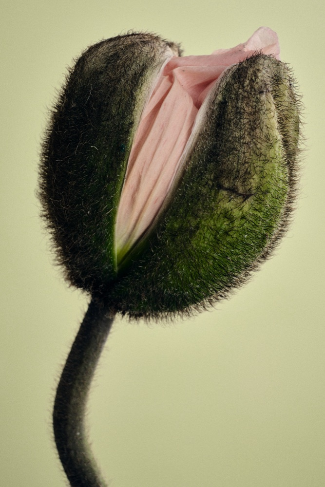

Возвращаться к ощущениям, дыханию и тонкости восприятия.
Давать место страху, гневу, ревности, радости, удовольствию и силе.
Соединять тело, ум, сердце и речь в один живой ответ.
В октябре состоится наш четвёртый совместный ретрит. Пема уже хорошо знает то общее, с чем мы приезжаем: бэкграунд, семейные и поколенческие истории, отношения с телом, собой и другими.
Всё, что за эти годы Пема успела понять и почувствовать в людях, которые собираются вокруг VAHUE, становится частью самого ретрита и уникальным полотном практик. Поэтому этот опыт действительно про нас и для нас.
В 2026 году программа объединяет первую и вторую ступени Wild Tantra: для тех, кто приезжает впервые, и для тех, кто продолжает путь с нами.
Семь дней посвящены только ретриту. Работа, звонки и повседневные дела остаются за пределами этой недели, чтобы у открывшегося утром опыта было время продолжиться, углубиться и найти форму к вечеру.
Как устроена практика
Пема соединяет тантрические медитации, работу с дыханием и праной, телесные практики, ритуалы, методы Каулы и Чод. Что-то проживается наедине с собой, что-то - в паре или всей группой. У ретрита есть структура и метод, но направление живой работы во многом задаёт то, что происходит с каждым и между участниками прямо сейчас.
Возвращение к ощущениям, естественной чувствительности, удовольствию и способности замечать тонкие изменения.
Исследование того, как мы цепляемся, защищаемся, повторяем знакомое и удерживаем энергию в одних и тех же ловушках.
Способность услышать свою правду и дать ей стать словами, в которых есть жизнь.
Индивидуальная работа переплетается с практиками в парах и общим полем группы. Направление живой работы задаёт то, что происходит прямо сейчас.
Путь начинается с тела и дыхания, с возвращения к ощущениям, тонкости восприятия и нашей естественной потребности и способности чувствовать удовольствие.
Затем внимание обращается к мыслям и эмоциям: к тому, как мы цепляемся, защищаемся, повторяем знакомое и удерживаем энергию в одних и тех же ловушках.
Отдельная часть - сердце и речь. Услышать свою правду и дать ей стать словами, в которых есть жизнь, словами, способными дать форму тому, что происходит.
Все практики переплетены, продолжают и дополняют друг друга. Каждая охватывает сразу несколько уровней и постепенно проявляет их внутреннюю связь.
Тело, дыхание, удовольствие и напряжение.
Мысли, эмоции, желания, привычные реакции, защиты и повторения.
Правду сердца и слова, способные дать форму тому, что происходит.
Тело, ум, сердце и речь, их энергию и силу, в одно целое.
«Ничего не отвергается. Ничего не отсекается. Ко всему мы подходим с чувством сакрального, даже к гневу, ревности, страхам, сомнениям, тревоге, кошмарам и слабостям.
Этот путь похож на поиски сокровища. Ты погружаешься в себя, чтобы найти алмазы, скрытые под пылью обусловленности и заблуждений. Эти алмазы - твоё тело, ум, сердце и речь. Когда они выходят на свет, свет осознанности и любви, каждый начинает сиять в полную силу, и их свет соединяется. Тело, ум, сердце и речь становятся гранями одного целого. Тогда сама жизнь начинает свободно проходить через тебя, в ощущениях, чувствах, мыслях и словах».
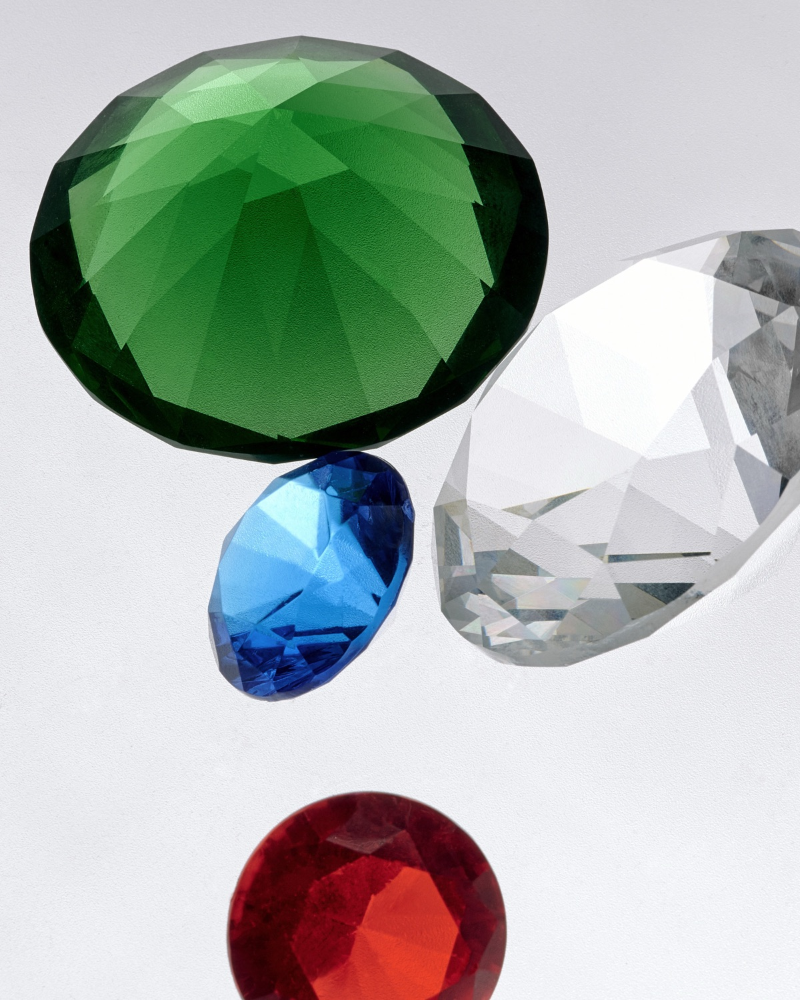
День собран как одно движение. То, что открылось утром, находит продолжение к вечеру, поэтому важно не пропускать отдельные части программы.
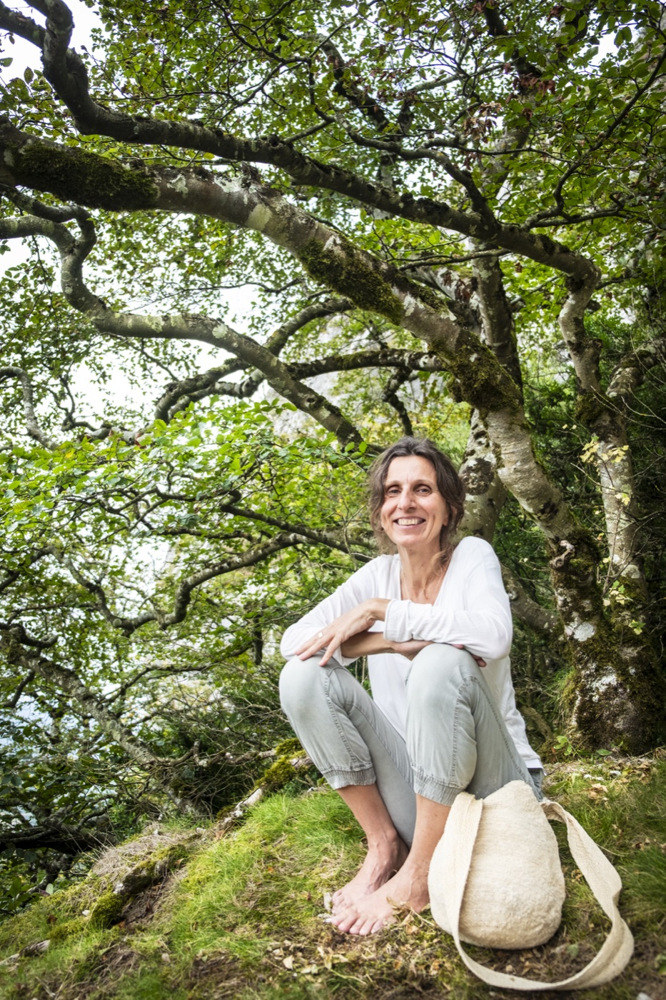
Мастер
Больше 25 лет Пема следует и передаёт традицию Тантры Каула. На её принципах она создала WildTantra - собственный подход к практике, раскрытый в трёх книгах и ретритах по всему миру.
Пема ведёт так же, как говорит о тантре: не сглаживая и не подгоняя живое под готовую форму. В ней соединяются мягкость и сила, любовь и острота, глубина и дикость. Она тонко чувствует человека и группу, знает, когда дать пространство, а когда прямо показать то, что мы привыкли обходить.
«Тантра - цветок: её аромат - любовь, её форма - сознание».
Историческая усадьба в сосновом лесу, в получасе от Лиссабона и океана - место для глубокой работы и бережного восстановления.
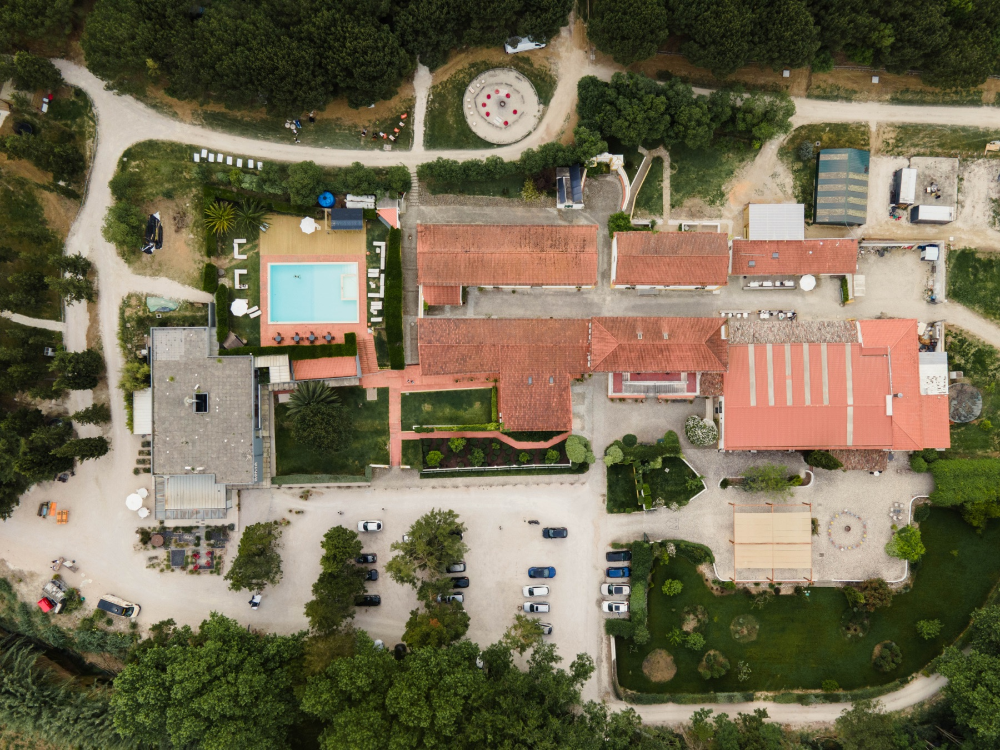
Светлый зал для практики, паровой купол, ледяная ванна, террасы, бассейн и комнаты. Каждый день - специальное веганское меню от шефов DOMA, разработанное вместе с Пемой под ритм недели.
Открыть сайт DOMA
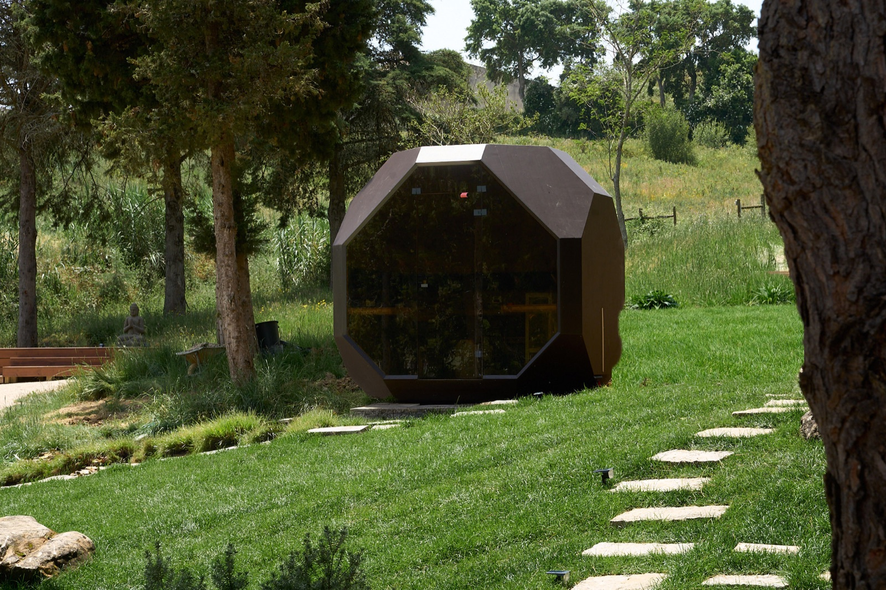

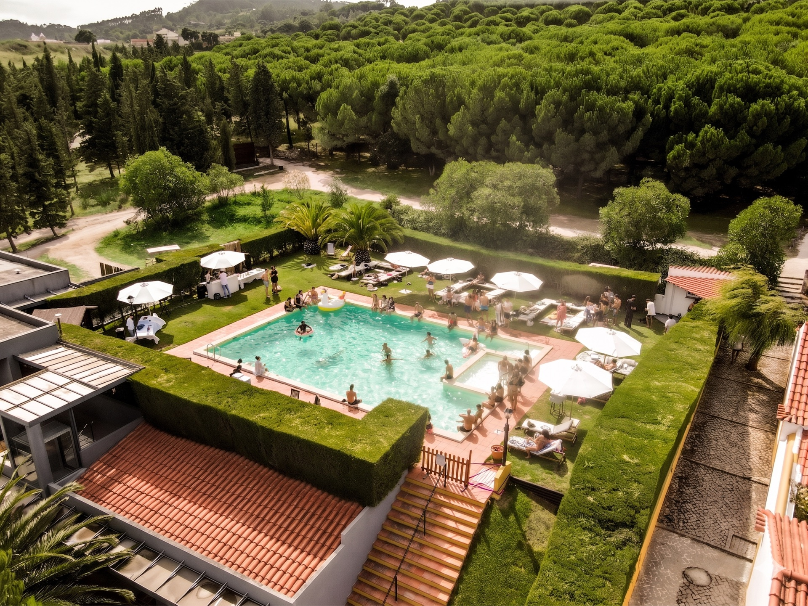

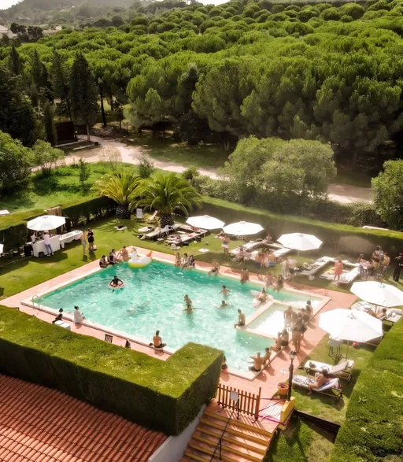

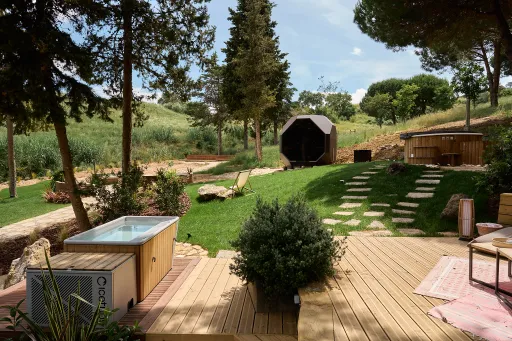
Отзывы
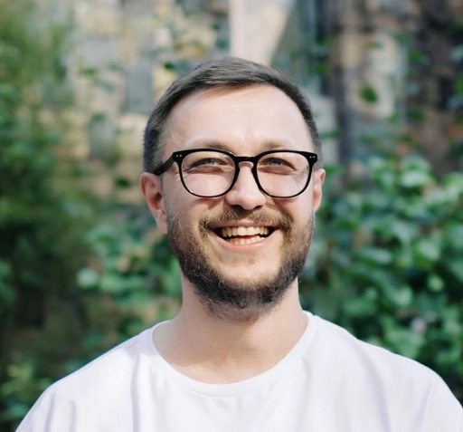
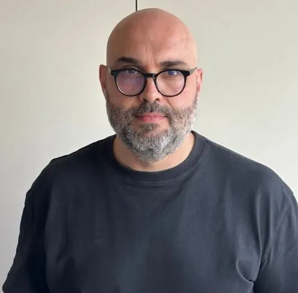
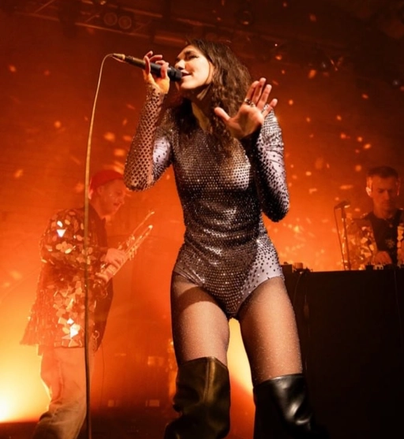
«Могу сказать только, что я пару раз плакал от одной только мысли, что со мной этот опыт мог бы не случиться. Раньше бы я больше всего оценил то, что у меня каждый день отваливалось по какой-нибудь несущей ментальной конструкции, а так оно и было, но сейчас я ценю другое. Сначала тебя родили, а потом ещё нужно самому почувствовать себя по-настоящему живым».
«Любые записки отсюда - как попытка написать себе письмо из трипа. Не умещается в слова ни один опыт. Насколько ты можешь развернуть в себе боль, настолько же и сила любви вырастет во все измерения над ним».
«Это было про встречу с Мастером. Сразу стало понятно, какой огромный масштаб держит Пема. Коннект с людьми происходит проще. Даже во взрослом возрасте можно создать близкие и глубокие отношения. С несколькими участниками я продолжаю общаться до сих пор».
«Как за неделю рушится всё, на чём я ехала во всём, что касается отношений мужчины и женщины? Больше не получается упаковывать мужчин в привычные коробочки. Они не помещаются, и игнорировать это невозможно. Это обнуление было как глоток свежего воздуха и огромным облегчением. С последнего ретрита я вышла с ощущением, что вернулась домой, к мудрости моего тела, которое всё знало, а я забыла. Давно в моей жизни не было такой ясности, как та, которую я получаю в тантре».
«Могу сказать, что это был один из самых впечатляющих и глубоких опытов. Исследование взаимодействия, энергии, чувственности, телесности, включённости в момент. Вообще кажется, что тантра - это то, к чему я всегда стремилась, просто не знала, как это называется».
В рабочих материалах предусмотрена цитата из подкаста «Зачем мужчине отношения и зачем ехать на тантру». Точный фрагмент для публикации пока не выбран.
В рабочих материалах предусмотрена цитата из разговора об энергии, намерении и практике тантры. Точный фрагмент для публикации пока не выбран.
Пема, участники и ведущие VAHUE говорят о том, что происходит на практике и зачем люди возвращаются.
Пема объясняет, что такое тантра Каула и почему практика начинается с тела.
Разговор по горячим следам: что происходит с человеком за семь дней ретрита.
Мужской взгляд: страхи перед ретритом и что меняется в отношениях после.
Как удерживать намерение и что остаётся в жизни, когда ретрит закончился.
Стоимость
Место бронируется после полной предоплаты. Проживание, дорога до Португалии и трансферы в стоимость не входят.
Как присоединиться
Мы собираем все заявки в вейтлист, чтобы лично познакомиться со всеми, кто хочет присоединиться. На коротком звонке мы больше расскажем о процессе, ответим на ваши вопросы и вместе поймём, подходит ли вам сейчас этот опыт.
Расскажите немного о себе и своём намерении.
Команда расскажет о процессе, ответит на вопросы и вместе с вами поймёт, подходит ли этот опыт сейчас.
Все заявки сначала попадают в вейтлист. Место закрепляется после решения команды и полной оплаты.
Знаем, что мужчинам часто сложнее сделать первый шаг. Поэтому при рассмотрении женских заявок преимущество будет у тех, кто хочет приехать вместе с мужчиной +1. Не обязательно с партнёром, это может быть ваш друг или близкий человек.
То, что уже можно понять из программы - и то, что необходимо уточнить лично.
По ссылке - короткая форма. После неё команда напишет и договорится о звонке, чтобы познакомиться, обсудить детали и вместе понять, подходит ли вам этот опыт.
Заявка не равна автоматическому бронированию места.
Правки Wild Tantra
Сохранённые правки остаются в локальной истории и отдельными событиями отправляются в общий архив Google Таблицы. Если интернет пропадёт, очередь отправится автоматически после восстановления связи.
Правка блока
Черновик сохраняется на этом устройстве по мере ввода.